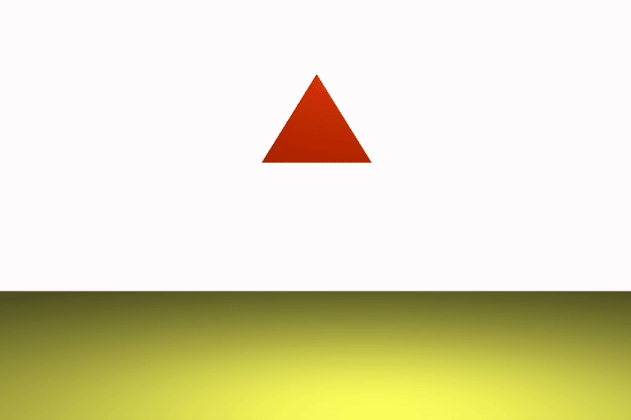
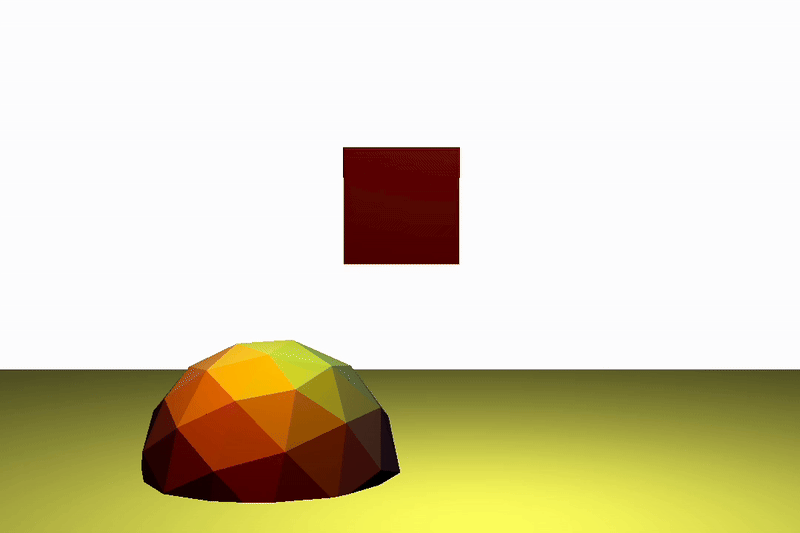

Deformable Object Simulations
For this project, I implemented the Finite Element Method to simulate the core features of basic deformable objects. This included force computation, time integration, and simple collision resolution to simulate gravity and collisions.
Features I implemented included gravity computation, time integration using the midpoint method, internal force calculation, and collisions off the ground and a sphere.
The Finite Element Method (FEM) is a technique used to approximate differential equations useful for rendering. In FEM, objects are discretized and decomposed into a combination of smaller, interconnected elements; in my implementation, I used tetrahedrons to make up the shapes. Calculations are done at the atomic level for each node, storing the current positions, velocities, and forces, and calculating the change in these values at each timestep. These calculations are combined to represent the larger equation and approximate the larger system.
After setting up my tetrahedral mesh system, the first step was computing and applying the force of gravity. This meant simulating the acceleration of gravity on all the tetrahedra in my system, causing the objects to speed up as they fall.
To simulate the effect of an object staying together and bouncing, I had to compute both the internal elastic and viscous forces. This included computing the per-node stress and strain for the system.

Without internal forces
With internal forces
The midpoint method is a mathematical technique used to more precisely approximate solutions to differential equations. It improves on Euler's method by computing the slope at the midpoint of the time interval to calculate the next step. This approach, also known as the modified Euler method, typically yields more accurate results than the standard Euler method.
I implemented collisions with two surfaces: the ground plane and a sphere embedded in the ground plane. For every node that penetrates the collider, I project it back out, then decompose the velocity into its normal and tangential components so I can manipulate them separately, reflecting the normal and scaling the tangential.

Collision off the ground

Collision off a sphere
Here are some of the simulations I was able to run.

Cube colliding with a sphere

Ellipsoid colliding with the ground